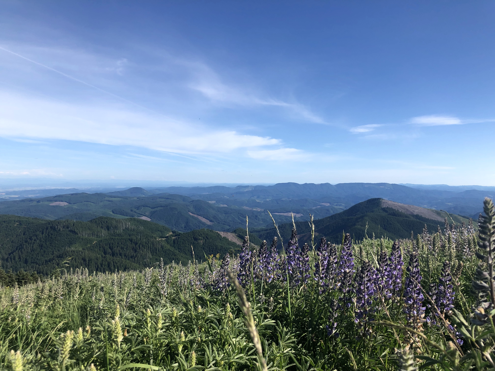
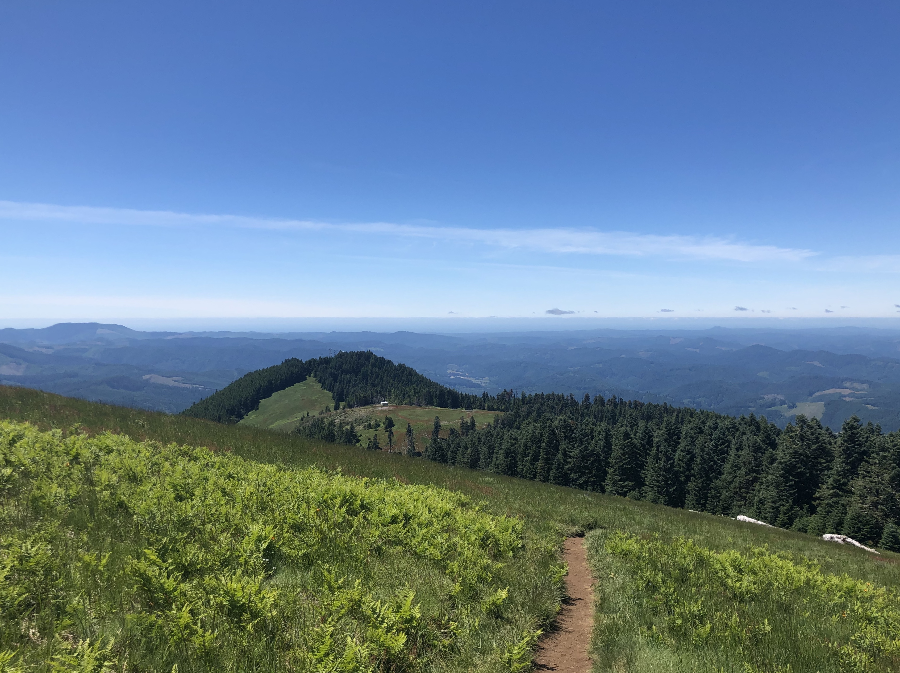
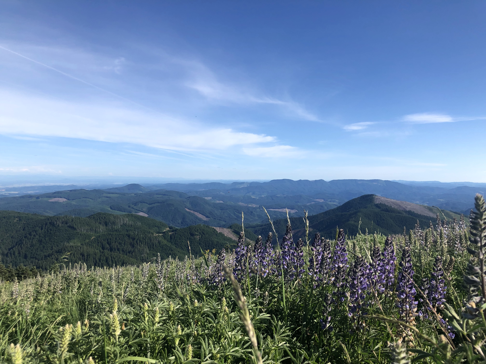
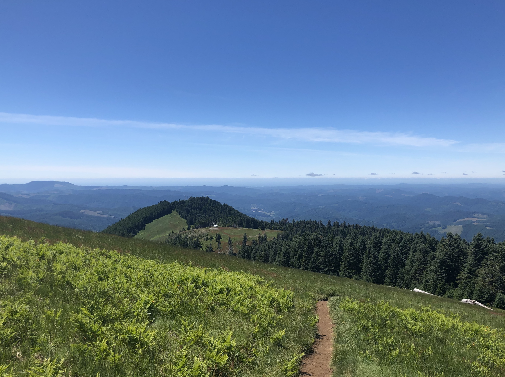
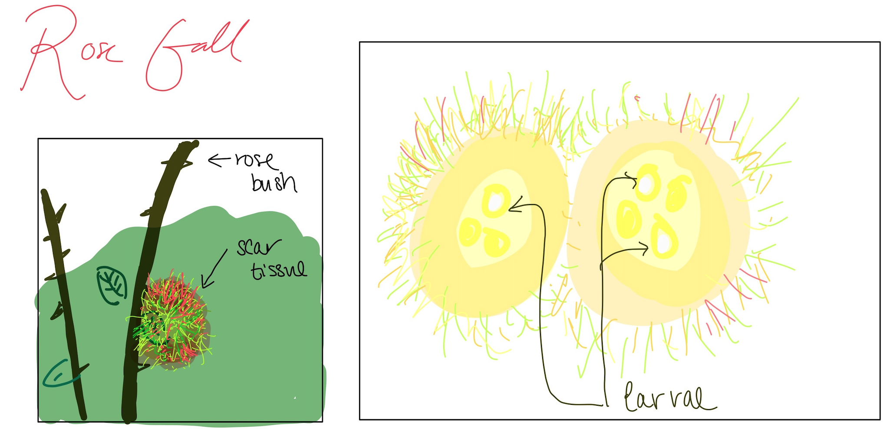

thuyvy's field guide!
bi101 - fall 2020
Concepts
Biodiversity
Study of the variety life on Earth at three levels. Most common is the diversity of species: the number of different species, including their identification and classification. Diversity can also be at the molecular level in the variations of genetic material (DNA) within a species. It can also refer to the diversity of ecosystems on earth. Usually when people say “biodiversity,” they are indicating number of different species.
- Squirrels are mammals; what are two characteristics that they share with other mammals in general and two characteristics that they share with other rodents specifically.
Squirrels and other mammals maintain a relatively constant internal body temperature, they have mammary glands that produce milk, they have neocortex brain structure, and they have 3 middle ear bones. Squirrels and other rodents have continually growing incisor teeth that they use to gnaw at food, dig tunnels, and that they use to defend themselves. Most rodents are small with short limbs and a long tail. Squirrels and most rodents eat seeds and they stash their seeds in reserve.
Ecology
The variety of interactions that occur between living organisms and the environment. This can include interactions within a species, between different species within a community, and between species and their physical environment. These interactions can be complex and interdependent, they can even change over time and distance. Ecology explains what is going on when we observe organism behaviors and distribution.
- Define Keystone Species
Keystone species are species that have a disproportionately dramatic impact on the ecosystem they are a part of. For example, beavers are a keystone species because they are able to maintain and alter logs (such as altering dams and waterways) to impact the ecosystem. In the previous lecture, we also saw that Sea Otters are also considered a keystone species. When sea otters were removed, we saw that this greatly reduced the amount of kelp available as sea otters were no longer there to keep the number of sea urchins (who eat the kelp) at a good level. - Explain why beavers are significant forces within ecosystems. (Go Beavs!)
Beavers are considered a keystone species meaning that they have a high impact on their ecosystem. This is because they have the ability to drastically alter the environment by their ability to remove trees and to build dams. This affects the nutrient retention (as dams build up nutrients) and it enables the environment to be a diverse habitat (as the removal of trees and building dams can drastically alter the area). - Describe how gorse has impacted pacific northwest coastal beaches and what is being done to manage these invasive plants.
Gorse is a highly invasive weed that threatens pacific northwest coast beaches by impacting farming, grazing, forestry, recreation, and native plants and animals. Some ways to manage these plants are to make sure the gorse doesn’t spread by cleaning all tools and equipment. Other methods include using herbicide to control and get rid of these weeds.
Conservation Biology
It is all in the name: this field is researching how to conserve organisms and their ecosystems. This builds on other areas of knowledge, including biodiversity and ecology. Conservation biologists often work with researchers from other fields to provide science knowledge that can assist in the complex work of resource management. In recent years, there is increased interest in linking conservation with sustainability; maintaining ecosystems and human cultures.
- Describe how to collect items while also reducing potential negative impact on organisms and the environment:
One thing to do is collect from other people’s collection. In the video, Leslie explains how collecting rocks can be expensive and bad for the environment. Instead, we should collect things from others so we don’t harm the environment.Another thing to do is to collect found items such as garbage and to retask them. Here, removing these items will not negatively impact the organisms and the environment, it may actually improve the environment. -
Provide specific examples of strategies used to attempt to save species from extinction, including the organism and the technique(s) used.
Some examples of strategies used to save species from extinction include: maintaining their habitats, monitoring and breeding programs. Maintaining habitats is a strategy employed to save the Pacific Salmon, people are working together to preserve and maintain their habitats and prevent any additional loss of their habitats. For the Florida Panther, these animals are being monitored by scientists using trackers. These scientists then try to prevent these animals from harm and try to heal animals that have been harmed. For example, if they see that a Panther has been still for too long this may suggest that this animal has been injured and the team will go to rescue and save the animal and provide it with care.
Connections
Photos

 



Mary's Peak, Corvallis OR
Here are pictures from when I've gone hiking @ Mary's Peak in Corvallis. I took the above photos on different days. I really like these photos as they're really pretty. And I especially really love the middle one as you can really see how tall the trees are in comparison to my friend in the middle. To me, I think he's pretty tall (I'm 5'6 and he's 6'2) so it makes me happy knowing he's small in the grand scheme of things. The photos also show the beautiful weather I was having on all of the days I went there. You can see the flowers blooming and the bright skies in my pictures. Photos are really nice for capturing the beauty of things and for documentation but it's also really nice for memory keeping purposes.
These photos fulfill the Connections-Photo section of my field guide as here are some pictures I documented and took when I went out into the field. For example, I could use the third image to try and classify the purple flower in the image (So far, I think it's close to a whiteleaf lupine but I am not quite sure) or I could use these images to explain about the weather and geography at Mary's Peak. Or I could use the last image to discuss human impact on Mary's Peak as there is a man-made path. Images are great for documentation and for making visual knowledge of concepts and places more readily and easily accessible.
Field Sketches
Rose Gall
Here, I sketched the rose galls we saw in our lecture videos.
In response to parasitic wasps larva that are placed on the rose bushes the rose bushes grows scar tissue around the parasite to protect itself. The larva benefits from this relationship as they now have a home!
Writing
Biology Bucket List
Here are a list of things I want to accomplish before I kick the bucket!
- Tour the MOMA, the MET, the Louvre, and the Museum of Pop Culture.
- While I have been to New York, Paris, and Seattle. I never really went to the museums since my family aren't huge museum people (we weren't there for very long). But I would really love to go to these museums and explore for a whole day. I'm moving to Seattle next year, so hopefully I'll finally be able to see the Museum of Pop Culture.
- Watch the Northern Lights in Iceland.
- I've seen the Northern Lights in Alaska but the visibility was low-ish when I went. So I'd love to go again and see it in Iceland since I've never traveled around Iceland.
- Visit the Grand Canyon, Big Sur, and Yellowstone.
- Build a sand collection from various beaches I travel.
- I actually started this collection when I was in the 6th grade when I went to Jamaica. I had sand from Jamaica, Mexico, and Aruba. However, I forgot to continue this collection and would really like to continue it.
- Build a collection of rocks from everyplace I hike.
- Selfie collection in every state/country I travel to.
- I'm honestly really bad at getting pictures of myself and I am not a selfie person so I figured this would be a good way to fix both problems in one go. Hopefully, I'll master the art of selfies. I do feel like I always forget where I travelled to and taking selfies would be a great way to remember where I've been and to prove to people I've been places.
Skills
Exploration
In order to properly explore and find new things, we have to be adequately prepared!
Here are my safety checklists:
Field Work Safety Checklist
- Do research on the area you are going to
- What to wear/bring
- What to avoid
- Use maps/guide books
- Bring a buddy! (if possible)
- Bring supplies (ex. food, first aid kit, water, masks, etc),
- Plan your outing
- Leave no trace!
- Always tell someone where you are going.
Lab Safety Checklist
- Have correct lab safety equipment
- Follow safety protocols
- Have first aid kit handy.
- Clean up after yourself
Description
Describe the three functional plankton groups including (1) what they do in a food web and (2) examples of organisms in each of the three groups
- Phytoplankton: marine producer that carries out photosynthesis. Ex: algae and diatoms
- Zooplankton: marine consumers that eat each other and phytoplankton. Ex: krill, protists, and small animals.
- Bacterioplankton: marine decomposers. Species of bacteria that enable nutrients to cycle back to producers.
Explanation
xplain what a succulent plant is, including (1) three ways succulents can be structured to survive in desert environments and (2) specific examples of succulent plants, including where they store their water. Succulents can plants that store water in their roots, stems, and leaves; this tactic allows them to survive in desert environments. Succulents can also structure themselves to survive in desert environments by stacking their leaves to reduce exposure to the high heat and by having funnel shapes to collect as much water as possible. Some examples of succulents include: Cacti and Aloe Vera which store their water in the stems.